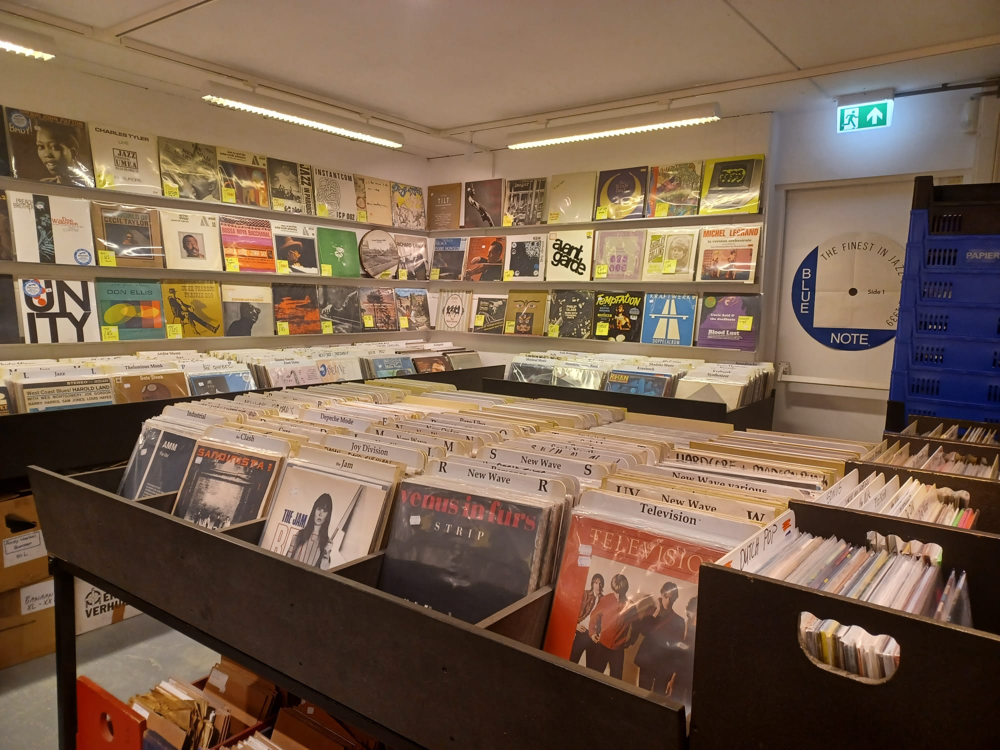
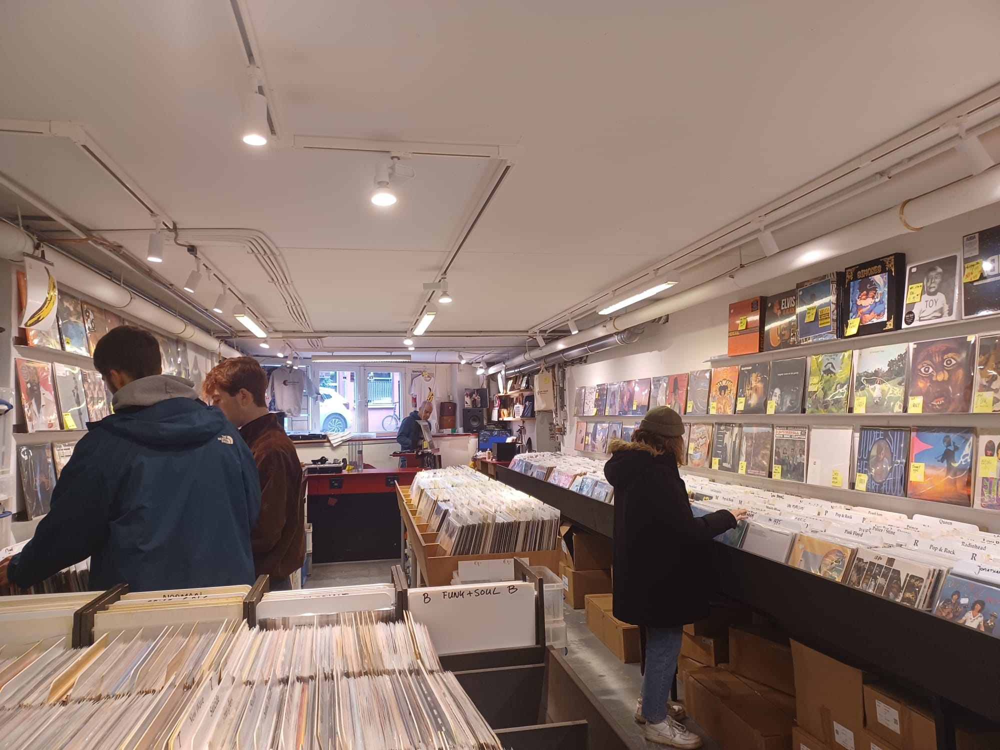

Waarom deze winkel?
Ik heb voor deze tweedehands platen zaak gekozen omdat ik zelf veel bezig ben met muziek en voornamelijk met het sparen van platen. Ik koop ze zelf meestal nieuw en ik heb er eigenlijk niet echt aan gedacht om ze tweedehands te kopen. Ik ben bij meerdere zaken geweest en ik vond deze het beste met veel verschillende keuze qua muziek.
Waarom tweedehands ''muziek''?
Door tweedehands muziek te kopen geef je platen en cds een tweede kans. Zo zorg je ervoor dat er geen grondstoffen nodig zijn voor het maken een nieuwe plaat/cd en hergebruik je een goeie plaat die anders verspild zou worden. Door spullen een tweede kans te geven zijn er minder grondstoffen, energie en water nodig. het scheelt ook veel uitstoot en afval.
De winkel
 Mijn ervaring
Ik ben zelf 2x langs geweest om een kijkje te nemen in de winkel en om foto's te nemen. Ik was al een tijdje opzoek naar een plaat en ik heb die daar eindelijk kunnen vinden. Ik vind het zelf een hele fijne en overzichtelijke winkel. alles staat netjes gesorteerd op artiest en genre en om het zoeken nog makkelijker te maken staat het ook op alfabetische volgorde. De winkel is makkelijk te vinden en zit bijna naast de metrohalte nieuwmarkt.